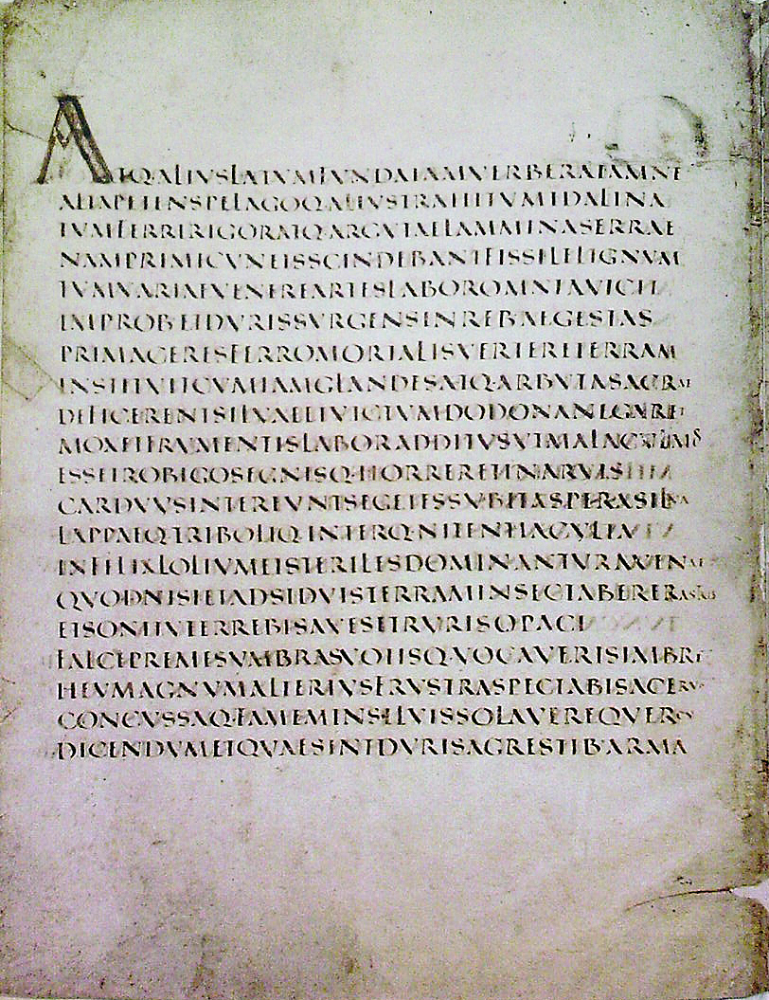

Tokenisation
Contents
%%html
<script>
function code_toggle() {
if (code_shown){
$('div.input').hide('500');
$('#toggleButton').val('Show Code')
} else {
$('div.input').show('500');
$('#toggleButton').val('Hide Code')
}
code_shown = !code_shown
}
$( document ).ready(function(){
code_shown=false;
$('div.input').hide()
});
</script>
<form action="javascript:code_toggle()"><input type="submit" id="toggleButton" value="Show Code"></form>
%%capture
%load_ext autoreload
%autoreload 2
%cd ..
import statnlpbook.tokenization as tok
---------------------------------------------------------------------------
ModuleNotFoundError Traceback (most recent call last)
Input In [2], in <cell line: 4>()
2 get_ipython().run_line_magic('autoreload', '2')
3 get_ipython().run_line_magic('cd', '..')
----> 4 import statnlpbook.tokenization as tok
ModuleNotFoundError: No module named 'statnlpbook'
Tokenisation#

Identify the words in a string of characters.
In Python you can tokenise text via split:
text = """Mr. Bob Dobolina is thinkin' of a master plan.
Why doesn't he quit?"""
text.split(" ")
['Mr.',
'Bob',
'Dobolina',
'is',
"thinkin'",
'of',
'a',
'master',
'plan.\nWhy',
"doesn't",
'he',
'quit?']
What is wrong with this?
In Python you can also tokenise using patterns at which to split tokens:
Regular Expressions#
A regular expression is a compact definition of a set of (character) sequences.
Examples:
"Mr.": set containing only"Mr."" |\n|!!!": set containing the sequences" ","\n"and"!!!""[abc]": set containing only the charactersa,bandc"\s": set of all whitespace characters"1+": set of all sequences of at least one"1"etc.
import re
re.compile('\s').split(text)
['Mr.',
'Bob',
'Dobolina',
'is',
"thinkin'",
'of',
'a',
'master',
'plan.',
'Why',
"doesn't",
'he',
'quit?']
Problems:
Bad treatment of punctuation.
Easier to define a token than a gap.
Let us use findall instead:
re.compile('\w+|[.?]').findall(text)
['Mr',
'.',
'Bob',
'Dobolina',
'is',
'thinkin',
'of',
'a',
'master',
'plan',
'.',
'Why',
'doesn',
't',
'he',
'quit',
'?']
Problems:
“Mr.” is split into two tokens, should be single.
Lost an apostrophe.
Both is fixed below …
re.compile('Mr.|[\w\']+|[.?]').findall(text)
['Mr.',
'Bob',
'Dobolina',
'is',
"thinkin'",
'of',
'a',
'master',
'plan',
'.',
'Why',
"doesn't",
'he',
'quit',
'?']
Learning to Tokenise?#
For English simple pattern matching often sufficient.
In other languages (e.g. Japanese), words are not separated by whitespace.
jap = "今日もしないといけない。"
Try lexicon-based tokenisation …
re.compile('もし|今日|も|しない|と|けない').findall(jap)
['今日', 'もし', 'と', 'けない']
Equally complex for certain English domains (eg. bio-medical text).
bio = """We developed a nanocarrier system of herceptin-conjugated nanoparticles
of d-alpha-tocopheryl-co-poly(ethylene glycol) 1000 succinate (TPGS)-cisplatin
prodrug ..."""
d-alpha-tocopheryl-co-poly is one token
(TPGS)-cisplatin are five:
(
TPGS
)
cisplatin
re.compile('\s').split(bio)[:15]
['We',
'developed',
'a',
'nanocarrier',
'system',
'of',
'herceptin-conjugated',
'nanoparticles',
'of',
'd-alpha-tocopheryl-co-poly(ethylene',
'glycol)',
'1000',
'succinate',
'(TPGS)-cisplatin',
'prodrug']
Solution: Treat tokenisation as a statistical NLP problem (and as structured prediction)!
classification
sequence labelling
Sentence Segmentation#
Many NLP tools work sentence-by-sentence.
Often trivial after tokenisation: split sentences at sentence-ending punctuation tokens.
tokens = re.compile('Mr.|[\w\']+|[.?]').findall(text)
# try different regular expressions
tok.sentence_segment(re.compile('\.'), tokens)
---------------------------------------------------------------------------
NameError Traceback (most recent call last)
Input In [11], in <cell line: 3>()
1 tokens = re.compile('Mr.|[\w\']+|[.?]').findall(text)
2 # try different regular expressions
----> 3 tok.sentence_segment(re.compile('\.'), tokens)
NameError: name 'tok' is not defined
What to do with transcribed speech?
Discuss and enter your answer(s) here: https://tinyurl.com/yx8vfcom
Background Reading#
Jurafsky & Martin, Speech and Language Processing (Third Edition): Chapter 2, Regular Expressions, Text Normalization, Edit Distance.
Manning, Raghavan & Schuetze, Introduction to Information Retrieval: Tokenization